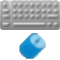

Exporters
Exporters Extensions
Extensions Interface
Interface Chowdren
Chowdren ClickStore
ClickStore Bug Tracker
Bug Tracker| |
This is an archive. |
| See the new ClickWiki at https://clickwiki.github.io. This version is just an archive for the purposes of migrating content to the new structure. |
The Mouse & Keyboard object
|  | |
| Author | |
| Status | Released |
| Release Date | Unknown |
| Available for | Not yet documented |
| Supported Runtimes | |
| License | Free |
| Download | |
|---|---|
| Includes Examples | No |
| Includes Help Files | Yes |
| Links | Included by default. |
{kind=link}
The Mouse & Keyboard object lets you create interactive applications that the user can participate in. Clickteam Fusion 2.5 can be programmed to perform certain actions when a specific key is pressed on the keyboard or when a mouse button is clicked. You can even specify to have certain actions repeated while a key is pressed or while the mouse button is held down. Clickteam Fusion 2.5 can also perform actions when the mouse clicks on specific objects or when the mouse pointer passes over defined zones within the frame.
The Mouse & Keyboard object is a system object and is only available in the Event editor.
Contents
- 1 Conditions
- 1.1 The Keyboard
- 1.2 The Mouse
- 1.2.1 Check for mouse pointer in a zone
- 1.2.2 Check for mouse pointer over an object
- 1.2.3 User clicks
- 1.2.4 Repeat while mouse-key is pressed
- 1.2.5 User clicks within a zone
- 1.2.6 User clicks on an object
- 1.2.7 Is mouse cursor displayed?
- 1.2.8 When mouse wheel is moved up
- 1.2.9 When mouse wheel is moved down
- 2 Actions
- 3 Expressions
Conditions
The Keyboard
The Keyboard conditions test for conditions specific to the keyboard. The Keyboard conditions are
Upon pressing a key
Tests for a specific key being pressed and performs all the actions on the event line each time that key is pressed.
Repeat while key is pressed
Tests for a specific key being pressed and performs all the actions on the event line for the entire time that the key is pressed.
Upon pressing any key
Tests for any key being pressed and performs all the actions on the event line each time any key is pressed.
The Mouse
The Mouse conditions test for conditions specific to the mouse. The Mouse conditions are
Check for mouse pointer in a zone
tests for the mouse pointer in a specific rectangular zone in the frame at application runtime.
Check for mouse pointer over an object
Tests for the mouse pointer over a specific object in the frame at application runtime.
User clicks
Tests to see if the user clicks the mouse pointer.
Repeat while mouse-key is pressed
Tests for the mouse button being pressed and performs all the actions on the event line for the entire time that the button is pressed.
User clicks within a zone
Tests to see if the user clicks the mouse pointer within a specific rectangular zone.
User clicks on an object
Tests to see if the user clicks the mouse pointer on a specific object.
Is mouse cursor displayed?
Is satisfied when the mouse cursor is shown, and false if the mouse cursor is hidden.
When mouse wheel is moved up
Is called each time the user has moved the mouse wheel up.
When mouse wheel is moved down
is called each time the user has moved the mouse wheel down.
Actions
Hide Windows Mouse Pointer
The Hide Windows Mouse Pointer action hides the Windows mouse pointer during application runtime. This can be used if you want to hide the default mouse pointer and use another object to represent the mouse pointer location.
Show Windows Mouse Pointer
The Show Windows Mouse Pointer action shows the Windows mouse pointer during application runtime if it has been hidden using the "Hide Windows Mouse Pointer" action.
Expressions
Current X Position Of The Mouse
XMouse
The Current X Position Of The Mouse function retrieves the current horizontal (X) coordinate of the mouse pointer during application runtime.
Current Y Position Of The Mouse
YMouse
The Current Y Position Of The Mouse function retrieves the current vertical (Y) coordinate of the mouse pointer during application runtime.
Value of mouse wheel movement
WheelDelta
Returns the value of the last mouse wheel displacement. This value should be a multiple of 120, positive when the wheel is moved up, negative when it is moved down. Note: Microsoft says that some future devices may return values lower than 120.